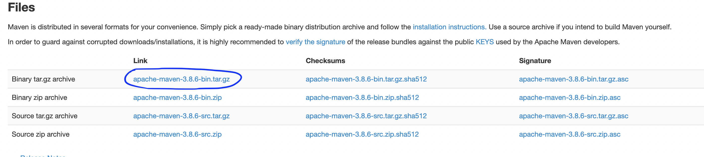

1.1 Download the Maven for example apache-maven-3.8.6-bin.tar.gz
1.2 The below command extracts the downloaded .tar.gz file to the current user’s home directory ~
% pwd
# In this example, the ${username} is mkyong
/Users/${username}/Downloads
% tar -xvzf apache-maven-3.8.6-bin.tar.gz -C ~
x apache-maven-3.8.6/README.txt
x apache-maven-3.8.6/LICENSE
x apache-maven-3.8.6/NOTICE
x apache-maven-3.8.6/lib/
#...
1.3 Now, the Maven folder is at this path /Users/mkyong/apache-maven-3.8.6
% ls -lsa ~/apache-maven-3.8.6
total 64
0 drwxr-xr-x 9 mkyong staff 288 Jan 14 11:08 .
0 drwxr-xr-x+ 29 mkyong staff 928 Jan 14 11:08 ..
40 -rw-r--r-- 1 mkyong staff 17504 Nov 7 2019 LICENSE
16 -rw-r--r-- 1 mkyong staff 5141 Nov 7 2019 NOTICE
8 -rw-r--r-- 1 mkyong staff 2612 Nov 7 2019 README.txt
0 drwxr-xr-x 8 mkyong staff 256 Jan 14 11:08 bin
0 drwxr-xr-x 4 mkyong staff 128 Nov 7 2019 boot
0 drwxr-xr-x 5 mkyong staff 160 Nov 7 2019 conf
0 drwxr-xr-x 65 mkyong staff 2080 Nov 7 2019 lib
% cd ~/apache-maven-3.8.6
% pwd
/Users/mkyong/apache-maven-3.8.6
1.4 On macOS 10.5 Catalina or later, the default shell is zsh, and we can create the environment variables MAVEN_HOME and update the PATH in ~/.zshenv .
Open the ~/.zshenv and append the following content. using the command nano ~/.zshenv
export MAVEN_HOME=~/apache-maven-3.8.6
export PATH=$PATH:$MAVEN_HOME/bin
1.5 Verification.
% mvn -version